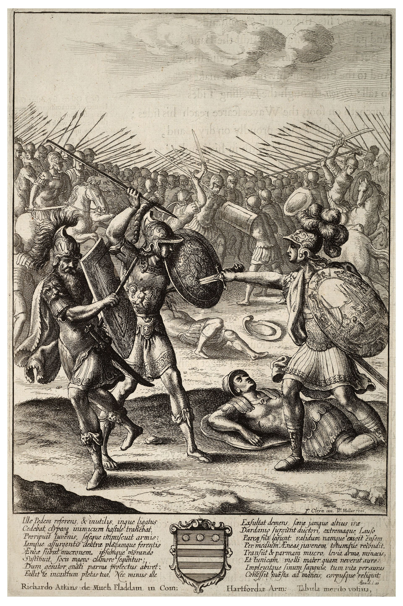

Энеида · песнь 10 из 12
Битва. Гибель Палланта и Мезенция

Кратко
На совете богов Венера обвиняет Юнону в том, что та тормозит исполнение судьбы, и просит защитить хотя бы Аскания; Юнона отпирается, что сама подстрекала Турна к началу войны, хоть и признаёт, что теперь помогает ему. Юпитер отказывается вставать на чью-либо сторону: «судьба сама найдёт дорогу» — и покидает собрание. Эней возвращается морем с этрусскими и аркадскими союзниками; завязывается яростная битва. Турн убивает юного Палланта, прежде помолившегося Геркулесу, который в бессилии оплакивает его, — Юпитер утешает героя тем, что даже его собственный сын Сарпедон погиб под Троей: у каждого свой день. Турн срывает с тела перевязь с изображением дочерей Даная, убивших мужей в первую брачную ночь, — дурное предзнаменование, которое он не замечает. Убитый горем Эней свирепствует в бою: берёт пленных для будущего жертвоприношения на костре Палланта, убивает молящего о пощаде Мага, жреца Гемонида, отца и сына Лукага и Лигера — почти как Ахиллес после гибели Патрокла. Изгнанный тиран Мезенций, презирающий богов, бьётся, пока раненого его Энеем не заслоняет собой сын Лавс; убитый горем отец возвращается на верном коне Рэбе лишь затем, чтобы пасть самому, попросив напоследок только одного — быть похороненным рядом с сыном.
Главные моменты
- Юпитер умывает руки: «судьба сама найдёт дорогу» — и оставляет войну людям.
- Паллант молится Геркулесу, который не может ему помочь, — боги сострадают, но не спасают.
- Турн снимает перевязь с дочерьми Даная-мужеубийцами — знак, который он не читает.
- Эней берёт пленных для жертвоприношения на костре Палланта — прямое эхо гнева Ахиллеса.
- Молящий о пощаде Маг не получает её от героя, забывшего о собственном благочестии.
- Смерть Лавса, спасающего отца, и благородная гибель Мезенция на коне Рэбе.
Значение
Война обнажает тёмную сторону Энея: благочестивый герой и мстительный убийца оказываются одним и тем же лицом — а перевязь Палланта на плече Турна уже отсчитывает время до финала.